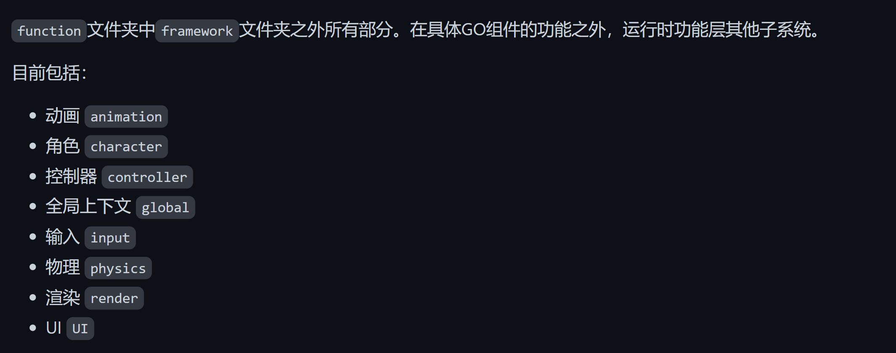

Piccolo引擎源码理解
engine.cpp/.h
定义在namespace Piccolo中
1 | class PiccoloEngine //engine文件主要定义了PiccoloEngine这个类的参数和行为 |
功能层 function
特别把上下文子系统提出来讲：global目录——理解上下文global_context.cpp/.h
为什么要设计上下文？ 上下文包含的引擎的各个系统，是一种封装，引擎只需要调用上下文的系统的函数即可，主要负责所有系统的启动和停止。（更多好处有待体会），因为我们在引擎的顶层文件是通过上下文系统来调用不同系统的，所以先把上下文子系统提出来讲。
定义在namespace Piccolo中
1 | class RuntimeGlobalContext //global_context文件主要定义了RuntimeGlobalContext这个类的参数和行为 |
（1）框架 framework
（2）子系统
